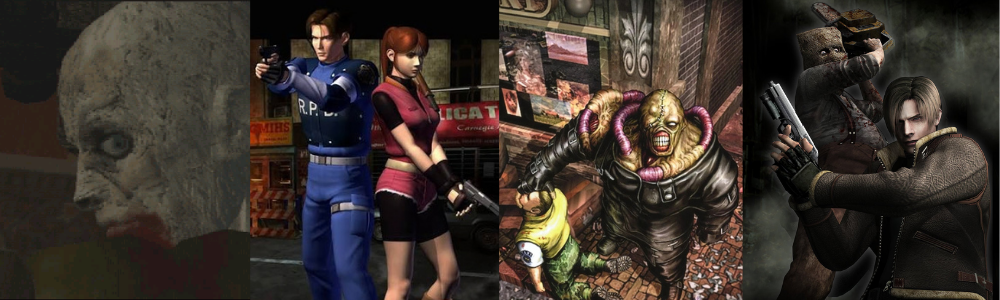
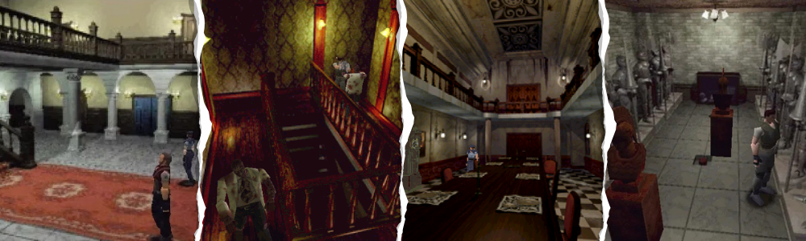
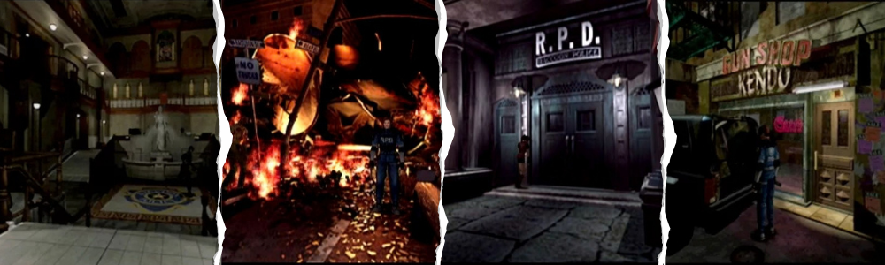
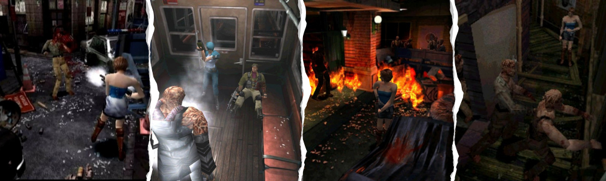
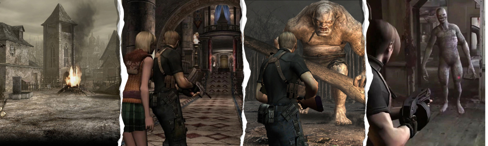
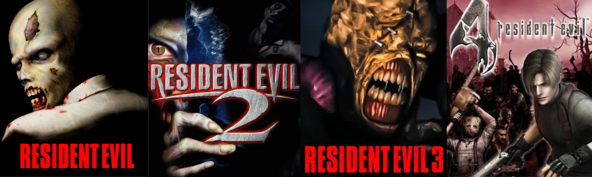

A Evolução Técnica de Resident Evil: Da Mansão Spencer à Vila Espanhola (1996–2005)

Poucas franquias de videogame carregam um peso tão grande na história do próprio meio quanto Resident Evil. Nascida em um momento de transição tecnológica brutal — dos cartuchos de 16 bits para os primeiros CD-ROMs em 3D — a série passou por transformações radicais em pouco menos de dez anos. Este artigo percorre os quatro primeiros jogos principais, explorando não só a história de cada um, mas as limitações técnicas da época que moldaram decisões de design que definiriam o gênero survival horror para sempre.
Resident Evil (1996): o nascimento do survival horror

O primeiro Resident Evil, lançado para PlayStation em 1996, não nasceu do jeito que conhecemos hoje. O projeto passou por diversas fases: começou concebido como um jogo de Super Nintendo em 1993, depois foi redesenhado como um título totalmente em 3D e em primeira pessoa em 1994, até finalmente se estabelecer no formato que marcou época — personagens em terceira pessoa sobre cenários pré-renderizados em duas dimensões.
Toda a história se passa dentro de uma isolada mansão vitoriana nos arredores de Raccoon City, cenário que se tornaria sinônimo da franquia: corredores estreitos, salões decorados com quadros e armaduras, e uma sensação constante de estar isolado do mundo exterior, sem para onde fugir.
Essa escolha não foi estética, foi uma resposta direta às limitações de hardware do PlayStation original. Criar ambientes totalmente em 3D, navegáveis livremente e com qualidade visual convincente, estava fora do alcance do console em 1996. A solução foi renderizar os cenários como imagens fixas de altíssima qualidade (pré-renderizadas fora do jogo, como se fossem fotografias de um cenário 3D) e depois sobrepor os personagens, esses sim modelados em polígonos e animados em tempo real.
Essa decisão técnica trouxe consigo duas consequências que se tornariam marcas registradas da série: os ângulos de câmera fixos (já que a imagem de fundo era estática, a câmera não podia se mover livremente sobre ela) e os famosos "tank controls" — o esquema de controle em que o personagem anda para frente/trás e gira sobre o próprio eixo, ao invés de se mover livremente em qualquer direção com o analógico. Sem esse esquema, o jogador se perderia constantemente toda vez que a câmera cortasse para um ângulo diferente.
Apesar das críticas de parte do público em relação aos controles, a equipe de desenvolvimento defendia que essas limitações, longe de serem só um problema técnico, geravam uma sensação cinematográfica que seria impossível de reproduzir com a tecnologia 3D padrão daquela época. Os ângulos dramáticos, muitas vezes colocando o jogador em posições que escondiam ameaças fora do quadro, se tornaram uma ferramenta de tensão psicológica proposital.
O resultado comercial e crítico foi tão forte que Resident Evil é hoje amplamente reconhecido como o jogo que definiu o gênero survival horror, sendo responsável até por um renascimento do interesse por zumbis na cultura pop nas décadas seguintes.
Resident Evil 2 (1998): mais ambição, mesmo motor

Diferente da mansão isolada do primeiro jogo, RE2 muda o cenário para o coração de Raccoon City, já tomada pelo surto de zumbis. Boa parte da história se passa na delegacia de polícia da cidade, conhecida como RPD — um prédio que originalmente serviu como museu de arte, e por isso guarda uma arquitetura labiríntica, cheia de estátuas e corredores que mais parecem uma galeria do que uma delegacia comum.
Lançado apenas dois anos depois, Resident Evil 2 manteve a base técnica do primeiro jogo — personagens poligonais sobre cenários pré-renderizados com câmeras fixas — mas usou essa mesma fórmula para entregar uma experiência muito mais ambiciosa em escopo.
A grande inovação de RE2 foi o chamado "Zapping System": o jogador escolhe entre Leon Kennedy ou Claire Redfield, e cada um vive uma versão diferente da história (chamada de Cenário A e Cenário B). Depois de terminar com um personagem, o outro cenário se torna disponível, mas com mudanças que refletem o que aconteceu na primeira jornada — inimigos já derrotados, puzzles já resolvidos, obstáculos que só existem por causa das ações do primeiro personagem. Isso resultava em quatro jogatinas distintas dentro do mesmo jogo, aumentando enormemente a rejogabilidade sem exigir um salto tecnológico do motor gráfico.
Nos bastidores, o jogo passou por um desenvolvimento turbulento: a versão inicial, hoje conhecida entre fãs como "Resident Evil 1.5", chegou a dois terços de conclusão antes de ser cancelada por não atender às expectativas da equipe, forçando um recomeço quase do zero.
Tecnicamente, o jogo ainda dependia de mídia física limitada — CD-ROMs de baixa capacidade comparados aos padrões atuais — o que impunha restrições reais de quanto conteúdo (vídeos, texturas, áudio) podia existir no disco, um desafio que a equipe contornou distribuindo o jogo em duas mídias separadas.
Resident Evil 2 se tornaria o jogo mais vendido da franquia em uma única plataforma até aquele momento, ultrapassando a marca de seis milhões de cópias.
Resident Evil 3: Nemesis (1999): refinamento sob pressão

Diferente dos dois primeiros jogos, Resident Evil 3 nasceu sob um cronograma mais apertado — a equipe queria lançar mais um título para a geração do PlayStation original antes de migrar para conceitos mais ambiciosos (um desses conceitos abandonados acabaria se tornando, mais tarde, a franquia Devil May Cry).
A ação se passa nas ruas destruídas da própria Raccoon City, horas antes dos eventos de RE2 — um cenário urbano aberto, com prédios em chamas, veículos abandonados e uma sensação de colapso total da cidade, bem diferente dos ambientes fechados e controlados dos jogos anteriores.
Tecnicamente, o jogo usa o mesmo motor e os mesmos princípios visuais dos antecessores — polígonos sobre cenários pré-renderizados, câmeras cinematográficas fixas — mas refina a jogabilidade em detalhes importantes. Foi introduzido um movimento de esquiva, permitindo à protagonista Jill Valentine desviar de ataques inimigos, além de um giro rápido de 180 graus e um sistema de mira automática que ajudava o jogador a lidar com a limitação da câmera fixa (que muitas vezes escondia o inimigo fora do campo de visão).
A maior inovação de design, porém, foi o próprio Nemesis, e o tipo de medo completamente diferente que ele introduziu na série. Em Resident Evil 2, o perseguidor conhecido como Mr. X aparecia apenas em momentos roteirizados — o jogo "decidia" quando e onde ele surgiria, então, por mais assustador que fosse, o jogador sabia, em algum nível, que aqueles encontros seguiam um script previsível, repetível a cada nova partida.
O Nemesis quebrou completamente essa previsibilidade. Ele podia seguir Jill Valentine de uma sala para outra, atravessando portas e ambientes que antes serviam como um "refúgio seguro" padrão da série, e aparecia para emboscá-la em momentos inoportunos, não necessariamente amarrados a um gatilho fixo de roteiro. Esse comportamento tornava impossível memorizar exatamente "quando o perigo vai aparecer", que era exatamente o tipo de segurança psicológica que o jogador tinha em relação à estrutura mais linear dos dois primeiros jogos.
O efeito prático disso no terror do jogo é significativo: o medo deixa de vir só dos ambientes fechados e da escassez de recursos (a base do survival horror até então) e passa a incluir a ansiedade constante de estar sendo caçado por algo que não segue as mesmas regras previsíveis do resto do jogo. Cada nova jogada podia se desenrolar de um jeito ligeiramente diferente, dependendo de quando e onde o Nemesis decidia aparecer — introduzindo um elemento de imprevisibilidade que se afastava da estrutura mais linear e controlada dos capítulos anteriores, e abrindo espaço para acontecimentos que fugiam do roteiro fixo que a franquia vinha seguindo até ali.
O jogo também introduziu decisões em tempo real através de telas de seleção rápida — um precursor direto dos eventos de "aperte o botão ou morra" que se tornariam comuns em jogos de ação anos depois, reforçando ainda mais essa sensação de que nem tudo estava sob o controle do roteiro original.
Resident Evil 4 (2005): a revolução da câmera

Se os três primeiros jogos aperfeiçoaram uma fórmula, o quarto capítulo a reinventou por completo — e o caminho até chegar lá foi um dos desenvolvimentos mais conturbados da história dos games. O projeto começou ainda para o PlayStation 2, em 1999, e passou por pelo menos quatro versões completamente diferentes que foram descartadas ao longo dos anos. A primeira tentativa, dirigida por Hideki Kamiya, se afastou tanto da proposta original de survival horror que a equipe decidiu transformá-la em um jogo totalmente novo — que se tornaria a franquia Devil May Cry.
A ambientação também rompeu com o padrão da série: ao invés de mansões e cidades americanas, a história se passa em uma remota região rural da Espanha, alternando entre um vilarejo isolado, um castelo medieval tomado por cultistas e, mais adiante, uma ilha secreta — cenários muito mais abertos e variados do que os corredores fechados dos jogos anteriores.
Quando finalmente lançado, em 2005, exclusivamente para o GameCube, Resident Evil 4 abandonou os ângulos de câmera fixos que definiam a série desde 1996. Em seu lugar, surgiu a câmera posicionada atrás do ombro do personagem — um enquadramento mais próximo e dinâmico, que dava ao jogador controle total sobre a direção da visão, ao invés de depender de cortes pré-definidos.
Essa mudança não foi só estética: ela alterou fundamentalmente o ritmo do jogo. Os inimigos passaram a se comportar de forma mais inteligente — cercando o jogador, escalando obstáculos, arremessando objetos — algo inviável de se manter interessante sob o esquema antigo de câmeras fixas. O jogo também introduziu controles sensíveis ao contexto (ações rápidas que mudam conforme a situação) e um sistema de mira mais preciso, sem retículo fixo, usando mira a laser em cada arma.
Essa reinvenção trouxe consigo uma mudança de identidade que até hoje divide opiniões entre os fãs da franquia: Resident Evil 4 foi o marco em que a série deixou de ser, em essência, um jogo de sobrevivência com recursos escassos e ritmo lento, para se tornar um jogo de ação e suspense, com tiroteios mais constantes, munição mais abundante e um ritmo bem mais acelerado. Os jogos seguintes da franquia principal continuariam nessa linha por vários anos, o que fez com que parte da comunidade considerasse RE4 o momento em que a série "perdeu" a essência original do survival horror em troca de uma experiência mais parecida com um jogo de tiro em terceira pessoa.
Tecnicamente, isso só foi possível porque a equipe abandonou de vez os cenários pré-renderizados em favor de ambientes totalmente 3D em tempo real — uma mudança que exigiu bem mais poder de processamento do GameCube do que qualquer jogo anterior da série havia demandado, e que representa o oposto exato da solução de contorno usada em 1996. O impacto foi tão grande que o esquema de câmera sobre o ombro se tornou padrão para toda uma geração de jogos de ação em terceira pessoa que vieram depois, vendendo mais de dez milhões de cópias e sendo constantemente citado como um dos jogos mais influentes já lançados.
Conclusão: quatro jogos, uma linha evolutiva

Olhando os quatro jogos em sequência, fica visível uma linha de evolução muito clara: os três primeiros títulos são, em essência, refinamentos incrementais sobre a mesma base técnica (câmera fixa, cenário pré-renderizado, tank controls), enquanto o quarto representa uma ruptura completa dessa base, abrindo caminho para uma nova era de jogos de ação em terceira pessoa que vai muito além da própria Resident Evil.
Principais marcos técnicos da trajetória:
- RE1 — Cenários pré-renderizados e câmera fixa como solução de contorno para as limitações do hardware.
- RE2 — Mesma base técnica, mas com maior ambição narrativa (Zapping System) e distribuição em múltiplos discos.
- RE3 — Perseguidor não roteirizado (Nemesis) introduzindo imprevisibilidade e quebrando a linearidade da estrutura anterior.
- RE4 — Abandono total da câmera fixa em favor de ambientes 3D em tempo real e câmera sobre o ombro, junto com uma virada de identidade que afastou a série do survival horror puro em direção à ação e ao suspense, mudando o gênero para sempre.